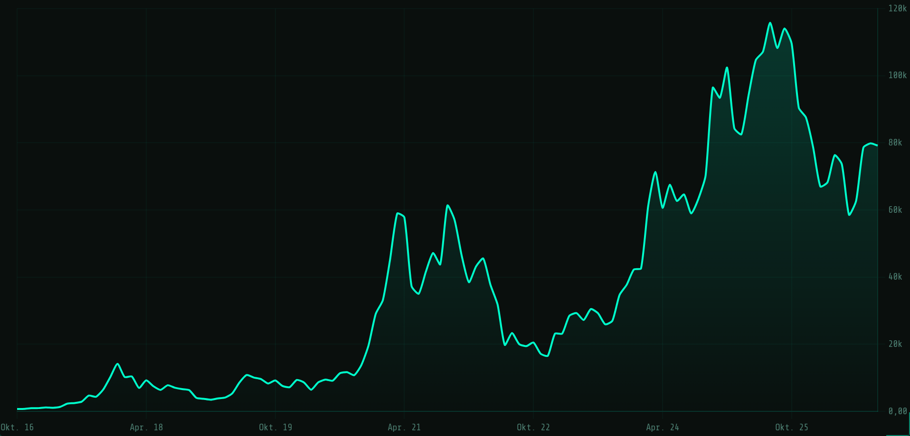
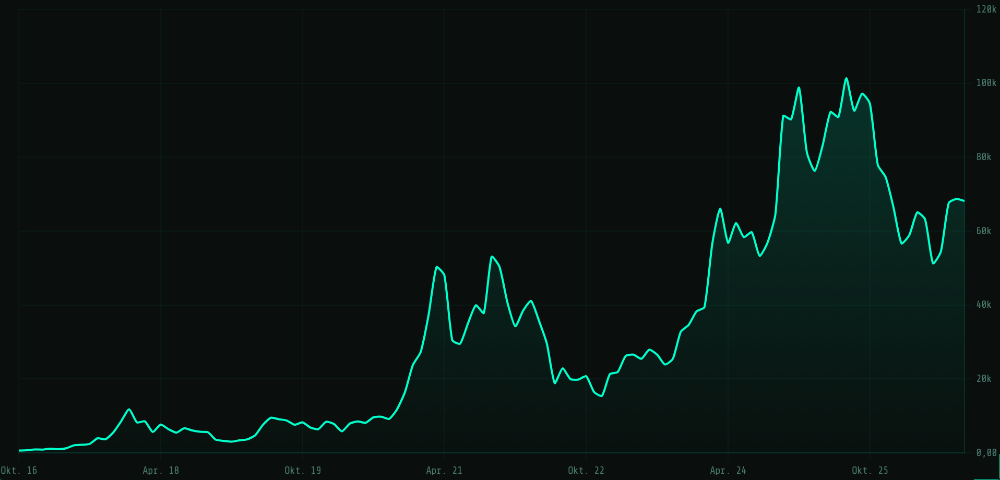
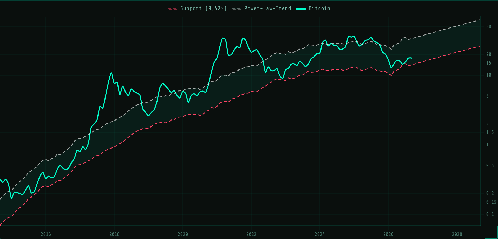
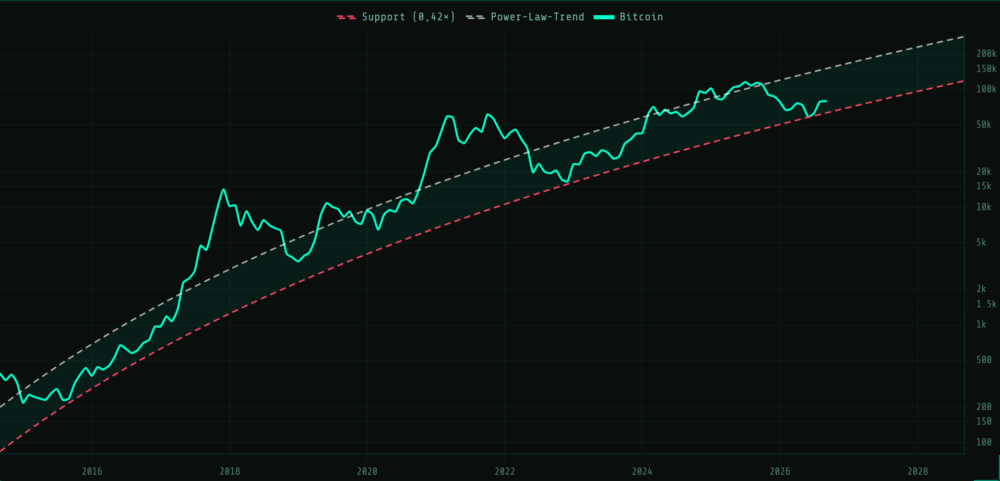

Drei Monate nach der Kapitulation sieht die Welt anders aus. Am 25. Juni tickte Bitcoin auf 58.000 USD, den tiefsten Stand seit Herbst 2024, und schloss den Juni knapp darüber. Genau dort verlief damals die Support-Linie unseres Power-Law-Korridors. Sie hat gehalten. Seitdem ist der Kurs um rund ein Drittel gestiegen und steht heute bei etwa 79.200 USD. Die Spot-ETFs hatten im August ihren stärksten Monat des Jahres, der Crypto Fear & Greed Index ist von 8 (Extreme Angst) auf 71 (Gier) gedreht. Und trotzdem: Der Kurs liegt immer noch 48 Prozent unter dem fairen Modell-Trend. Die spannende Frage ist deshalb nicht, ob der Boden erreicht war, sondern was zwischen hier und der Trendlinie steht. Eine Fed, die über Zinserhöhungen nachdenkt, zum Beispiel.
„Diese Analyse dekonstruiert die Diskrepanz zwischen Preis und Wert. Sie ist keine Kaufempfehlung, sondern ein Werkzeug zur Orientierung im vierdimensionalen Raum aus Zeit, Preis, Adoption und Energie.“
Der Power-Law-Support hat den Zyklusboden im Juni exakt markiert, Bitcoin ist seitdem von 58.000 auf rund 79.000 USD gelaufen und sitzt jetzt mit 25 Prozent Korridor-Position im unteren Drittel: nicht mehr die Schnäppchenzone vom Juni, aber mit 48 Prozent Abstand zum fairen Trend immer noch weit entfernt von Euphorie.


Das Makro-Bild hat sich gegenüber dem Juni nicht verbessert, es hat sich nur verschoben. Damals war Risk-off der Auslöser des Abverkaufs. Heute steht die US-Notenbank vor einer Entscheidung, die der Markt lange für undenkbar hielt: eine Zinserhöhung.
Bemerkenswert: Die Aktienmärkte haben auf die starken Arbeitsmarktdaten mit Verkäufen reagiert, Bitcoin nicht. Der Kurs hielt die 79.000 USD, während der S&P 500 nachgab. Das ist noch kein Trend, aber ein Hinweis, dass die ETF-Nachfrage im Moment schwerer wiegt als das Zinsgespenst. Die Nagelprobe kommt mit den Inflationsdaten am 10. und 11. September und der Fed-Entscheidung eine Woche später.
Ehrlichkeit gehört dazu: Gold war 2026 bisher das bessere Investment. Die Unze notiert bei rund 4.400 bis 4.450 USD, ein Bitcoin kostet damit etwa 17,8 Unzen. Am Allzeithoch im Oktober 2025 waren es noch rund 32 Unzen. Bitcoin hat also gegenüber Gold fast die Hälfte verloren, während beide Assets vom selben Misstrauen gegenüber dem Fiat-System leben.
Für den langfristigen Eigentümer ist das kein Grund zum Umschichten, sondern eine Information: In Phasen, in denen Bitcoin wie ein Tech-Wert gehandelt wird, gewinnt das alte Geld. In Phasen, in denen die Knappheit zählt, dreht das Verhältnis. Historisch waren Tiefs in der Ratio keine Verkaufs-, sondern Kaufsignale für Bitcoin.

Unser Power-Law-Tool kann den Korridor auch in Gold statt in Dollar zeichnen. Das Bild ist ernüchternder als in USD: Weil Gold seit 2024 selbst steil gestiegen ist, verläuft die Trendlinie in Unzen seit zwei Jahren fast flach, und beim Juni-Tief ist Bitcoin in Gold gerechnet kurz unter den Support gerutscht, was in Dollar nicht passiert ist. Heute steht der Kurs bei 17,7 Unzen, der Support bei rund 14 Unzen, der Modell-Trend bei rund 34 Unzen. Am Allzeithoch im Oktober 2025 lag Bitcoin mit rund 32 Unzen also praktisch auf dem Gold-Trend, nicht darüber. Abweichung und Korridor-Position sind identisch mit der Dollar-Ansicht (48 Prozent unter Trend, 25 Prozent Korridor), weil beide Größen durch denselben Goldpreis geteilt werden.
Lösen wir uns vom Tagespreis und schauen auf die Mathematik der Wachstumskurve. Die Live-Werte stammen aus unserem eigenen Power-Law-Tool:

Trägt man den Bitcoin-Kurs doppelt-logarithmisch gegen die Zeit seit dem Genesis-Block (3. Januar 2009) auf, liegt er seit über 15 Jahren erstaunlich nah an einer Geraden. Eine Gerade im Log-Log-Diagramm bedeutet: Der Kurs wächst nach einem Potenzgesetz, nicht exponentiell, sondern mit der Zeit abflachend, aber stetig. Der Trend (weiß) ist der faire Modellwert, um den der Kurs in Zyklen pendelt: mal weit darüber (Euphorie), mal deutlich darunter (Bärenmarkt). Der Support (rot, Trend × 0,42) ist die untere Korridorgrenze, die bisher kein Bärenmarkt-Boden nachhaltig unterschritten hat.
Aktuell sitzt der Kurs mit rund 25 Prozent Korridor-Position im unteren Drittel und 48 Prozent unter dem fairen Trend. Das ist nicht mehr die Extremzone vom Juni, aber immer noch ein Bereich, aus dem heraus historisch mehr Aufwärts- als Abwärtsbewegung folgte. Zwei Dinge gehören dazu: Erstens steigt der Support weiter um etwa 2,8 Prozent pro Monat, ein Rückfall auf die rote Linie wäre also heute schon teurer als im Juni. Zweitens ist das Power Law eine statistische Beobachtung, kein Naturgesetz. Es beschreibt die Vergangenheit gut, ist aber keine Garantie für die Zukunft. Nutze es als Landkarte zur Einordnung, nicht als Versprechen.
Was sagen die Ketten-Daten jenseits des Tagespreises?
Im Juni schrieb ich, der Verkaufsdruck komme klar aus dem ETF-Mantel. Drei Monate später ist es der Kaufdruck, der von dort kommt:
Die Lesart: Dieselben Produkte, die im Mai und Juni den Abverkauf ausgelöst haben, kaufen jetzt bei 20 Prozent höheren Kursen zurück. Das ist kein Zeichen von Weitsicht, sondern von Momentum-Kapital. Wer unten gekauft hat, sitzt heute besser als die Adressen, die auf die grüne Kerze gewartet haben.
Der Sommer war für Miner hart. Die Difficulty ist 2026 zehnmal gesenkt und achtmal erhöht worden, unter dem
Strich rund 13 Prozent tiefer als zu Jahresbeginn. Zu Beginn des Jahres lag sie bei 146 Billionen, jetzt bei
127,45 Billionen nach einer kleinen Erhöhung um 1,3 Prozent am 5. September. Die Hashrate
liegt im Sieben-Tage-Schnitt bei rund 934 EH/s, nach 777 EH/s im Juni. Der Rekord von rund
1,3 ZH/s (Tageswert) aus dem Oktober 2025 ist noch nicht wieder erreicht.
Das Signal: Mit dem Kursanstieg ist der Hashprice, also der Erlös pro Rechenleistung, binnen
30 Tagen um rund 22 Prozent gestiegen. Maschinen, die im Juni abgeschaltet wurden, laufen wieder an. Das
Netzwerk hat die Kapitulation der Miner mit Difficulty-Senkungen abgefedert, genau wie es gebaut wurde. Kein
Ausfall, kein Notfallplan, nur der Algorithmus.
Am Sonntag, dem 6. September, wurden rund 4.000 BTC (etwa 320 Mio USD) aus der Federation-Wallet des Liquid Network abgezogen. Ursache war ein Bug in der Elements-Software (Confidential Transactions, Rangeproof-Cache), mit dem sich ungedeckte L-BTC erzeugen ließen. Der Peg-out selbst lief regulär über die 11-von-15-Föderationsschwelle, gestohlen wurde kein Schlüssel. Die Sidechain wurde pausiert, Börsen haben L-BTC-Ein- und Auszahlungen gestoppt. Die Akteure nennen sich „Whitehats" und haben am 7. September, nach dem Patch, rund 3.400 BTC zurückgeschickt. Etwa 600 BTC (rund 47 Mio USD) behalten sie als „Bounty".
Die Lehre ist unabhängig vom Ausgang: Die Bitcoin-Blockchain war zu keinem Zeitpunkt betroffen. Betroffen ist ein Sidechain-Token, dessen Sicherheit an einer Gruppe von Signierern und an Software hängt, die nicht Bitcoin ist. L-BTC ist ein Versprechen auf Bitcoin, kein Bitcoin. Das gilt für jeden Wrapped-Token, jede Sidechain und jedes „Bitcoin-Konto" bei einem Anbieter. Wer den Schlüssel nicht hält, hält ein Versprechen.
Basierend auf den Daten ergeben sich folgende Szenarien für den rationalen Eigentümer:
Wenn du Bitcoin möglichst eigenverantwortlich halten willst, nutze nicht dein Bankdepot:
Hinweis: Bei einigen Links handelt es sich um Affiliate-Links. Wenn du sie nutzt, unterstützt du meine Arbeit, ohne dass es dich mehr kostet. Danke!
Kurs- und Power-Law-Werte stammen aus unserem eigenen Charts-Tool (api.alien-investor.org). ETF-Flows (Farside, SoSoValue), On-Chain-Daten (Glassnode, Santiment), Hashrate und Difficulty (CoinWarz, mempool.space), Fed-Daten (federalreserve.gov, BLS), der Liquid-Vorfall (Blockstream, Protos) und der Crypto Fear & Greed Index (alternative.me) wurden gegen unabhängige Quellen gegengeprüft. Stand: 7. September 2026.
Danke für deine Unterstützung – für freie Inhalte, Finanzsouveränität und den außerirdischen Widerstand!